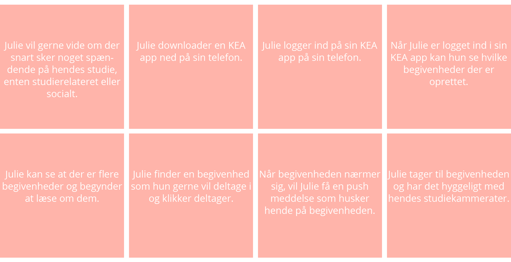
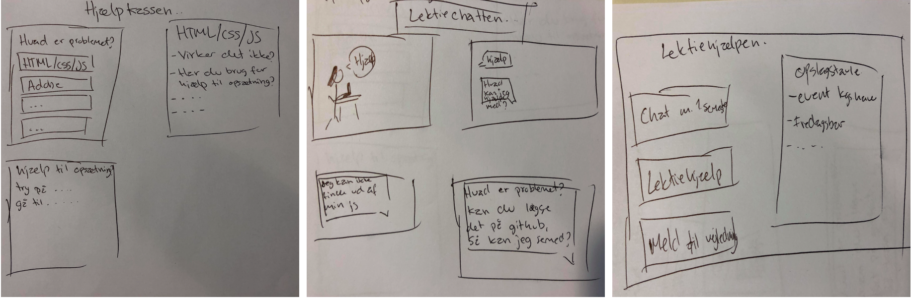
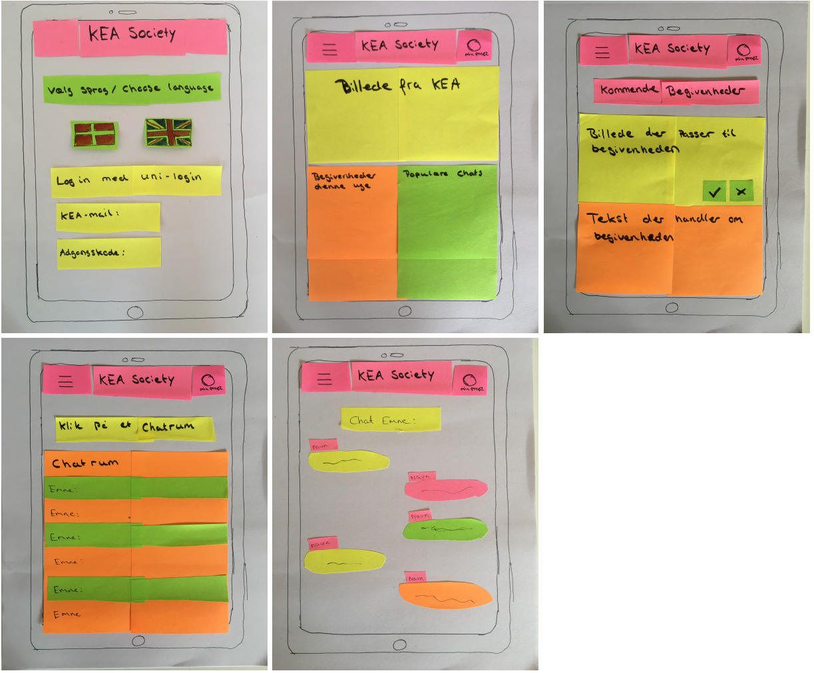
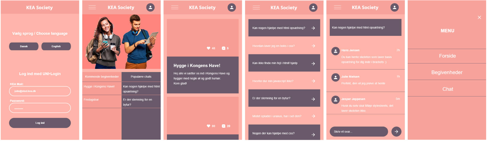

Link til GitHub-repository
Brugerresearch
Indsamlet og organiseret data
Da de internationale og danske studerende ikke kommunikere sammen, undersøgt årsagen, ved at indsamle data og organisere dataen.
Spørgeskema - Google SheetsExcel dokument med organiseret data:
Excel dokumentData Mining
Intressante udtagelser fra spørgeskemaet
- Hvilke fordele kan du se ved at arbejde mere sammen med international linje på MMD?
- At udvide ens fagtermer på engelsk, så man måske vil føle sig mere oplagt til at søge et engelsktalende studiejob - praktik plads osv.
- At danne kontakter i verdenen, i stedet for i DK kun.
- At man får et større netværk
-
I hvor høj grad kunne du tænke dig at arbejde sammen med de internationale studerende?
- Der er 6 der har svaret 5
- Der er 7 der har svaret 4
- Der er 19 der har svaret 3
Altså viser det at størstedelen har en interesse i at arbejde sammen med de internationale studerende.
Experience map
Pain Points:
- De internationale og danske studerende kommunikere ikke sammen
- De har svært ved at finde en måde at snakke sammen på
- Sprogbarriere
Goals:
- At få de internationale og danske studerende til at snakke sammen
- Få dem til at hjælpe hinanden
- De kan kommunikere på engelsk, da de fleste danskere kan snakke engelsk
- De kan blive sociale igennem en app
Problemformulering
Hvordan får man de danske og internationale studerende på KEA til at kommunikere mere med hinanden?
Persona
Storyboard
Features og funktionaliteter
Phone features:
Notifikationer og push beskeder.
Brugssituation:
Status og rediger/opret, da brugeren kan holde sig opdateret med begivenheder og samtidig chatte med andre studerende om problemstillinger man står overfor ved en opgave.
Brugskontekst:
Appen vil måske blive brugt en gang om dagen hvis man vil tjekke sociale events, men hvis man skal have hjælp vil den nok tjekkes oftere.
Android/Iphone:
Appen vil være ens på begge enheder.
AOF:
Aktiviteter:
Man kan oprette begivenheder som man kan redigere i, samt man kan oprette spørgsmål.
Man kan svare på et spørgsmål i chatten.
Man kan trykke deltager eller ikke deltager på en begivenhed
Objekter:
Oprette begivenhed: Man skal kunne oprette, slette og redigere i sin begivenhed.
Oprette spørgsmål: Man skal kunne oprette spørgsmål og slette dem igen samt skal man kunne komme i kontakt med andre studerende.
Features/funktionaliteter:
Oprette begivenhed: Tilføje billede og information, der passer til begivenheden og dele den med andre studerende.
Oprette spørgsmål: Skrive sit spørgsmål og dele det med andre studerende, derefter kan andre svare på spørgsmålet og man kan have en samtale igennem chatten.
Dokumentation af Design Charette
Papirprototype
XD prototype
Se og prøv min prototype her